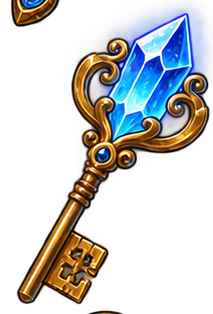

Testa vad du kan. Öva där det räknas.
Frågorna är riktiga tävlingsfrågor från flera års Pythagoras Quest. Du börjar med ett kort test, sen övar du mer på det som är lite klurigare, och samlar poäng på vägen.
- 1Ett kort test. Tolv frågor med olika svårighetsgrad, bara för att se var du står.
- 2Din karta. Du får se vad du redan är bra på, och vad som är kluringast just nu.
- 3Övning och belöningar. Fler frågor på det klurigaste, och du samlar poäng och märken hela tiden.
Hur bra är du på olika saker?

Din hemliga kod
…
Kategori
Källa
Svagt område
Fråga…
Så här gick det för dig!
0
Frågor
0
Rätt
0%
Träffsäkerhet
Uppdrag klart!
0
Rätt svar
0
Poäng intjänade
0
Bästa svit
Vad vill du göra härnäst?
Välj hur du vill öva den här gången.
Vilket ämne vill du öva på?
Blixtmatte
Svara på så många snabba tal du kan innan tiden tar slut. Enkel plus, minus och gånger, inget krångel.
7 × 8
Dags att andas ut!
0
Poäng
0
Rekord